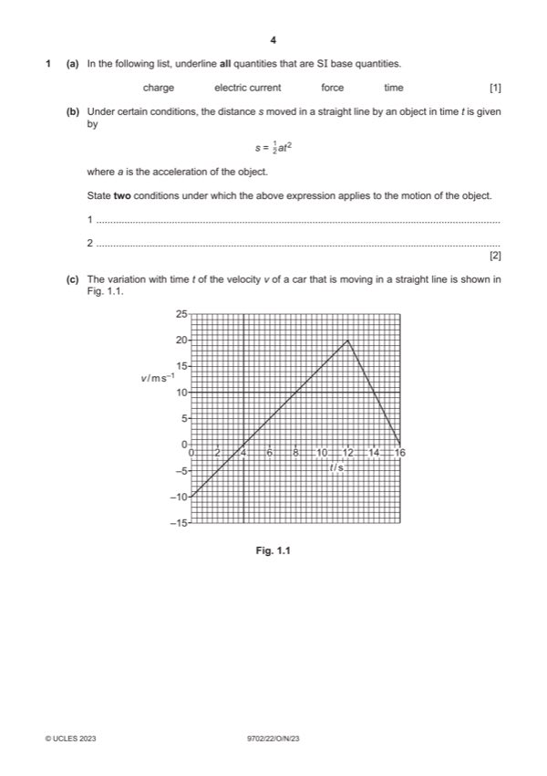

Question 1

Original paper page 4
Part 1(a) — solution
- [B1] Obtain/use: only electric current and time underlined
Mark points
- [B1] Obtain/use: only electric current and time underlined
Part 1(b) — solution
- [B1] Obtain/use: initial speed / velocity is zero
- [B1] Obtain/use: (non-zero magnitude of) acceleration is constant / uniform (and in a straight line)
Mark points
- [B1] Obtain/use: initial speed / velocity is zero
- [B1] Obtain/use: (non-zero magnitude of) acceleration is constant / uniform (and in a straight line)
Part 1(c)(i) — solution
- magnitude of acceleration at t = 8.0 s is less than that at t = 14.0 s B1
- direction of acceleration at t = 8.0 s is opposite to that at t = 14.0 s B1
Mark points
- magnitude of acceleration at t = 8.0 s is less than that at t = 14.0 s B1
- direction of acceleration at t = 8.0 s is opposite to that at t = 14.0 s B1
Part 1(c)(ii) — solution
- [A1] Obtain/use: a = e.g. (20 + 10) / 12 or (0 + 10) / 4 or (20 – 0) / (12 – 4)
Mark points
- [A1] Obtain/use: a = e.g. (20 + 10) / 12 or (0 + 10) / 4 or (20 – 0) / (12 – 4)
Part 1(c)(iii) — solution
- [A1] Obtain/use: displacement = 60 m
Mark points
- [A1] Obtain/use: displacement = 60 m